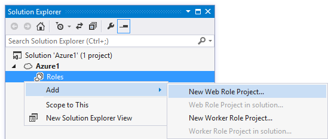
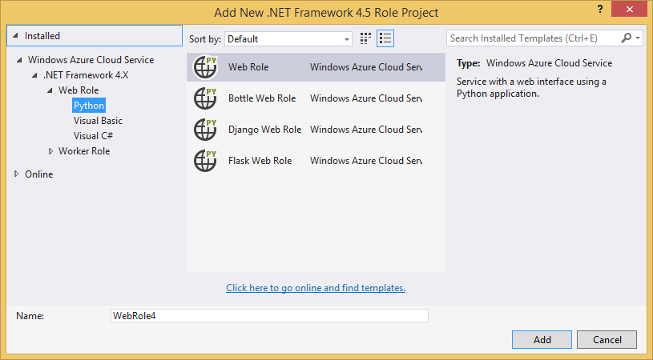
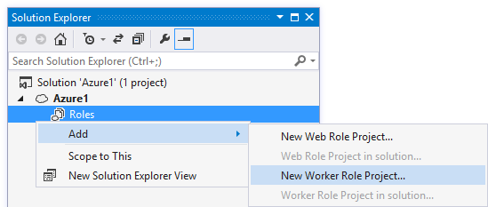
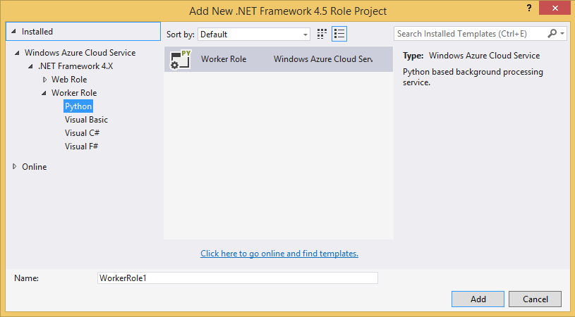

(These are some tips to help you get started. For more detailed documentation, visit our online documentation.)
Cloud projects allow you to design an application made up of one or more roles that may be written in Python or other languages. An application can then be deployed to Microsoft Azure Cloud Service, where each role will be run on one or more virtual machine instances, depending on your scaling settings.
Web roles are used for web-facing front ends, and typically provide a HTTP or REST interface.
Worker roles are used for long running tasks with no user interaction, and typically use Microsoft Azure data and app services.
This readme file can be deleted when you no longer need it.
Right-click on Roles and select Add New Web Role.
Select a project type to create. Python web roles are available from the list of languages. Adding roles written in different languages is okay.
Right-click on Roles and select Add New Worker Role.
Select a project type to create. Python worker roles are available from the list of languages. Adding roles written in different languages is okay.
